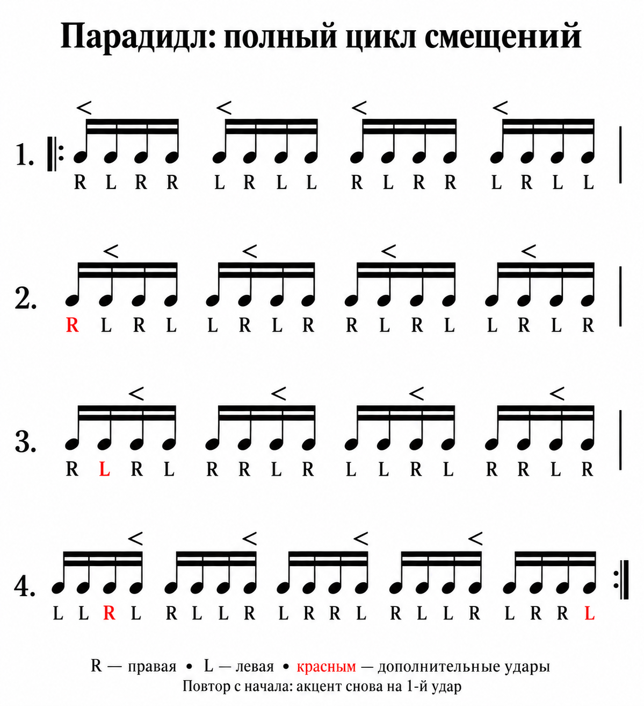

Файл .ritmika сохраняет все такты, темп и звуки для следующей практики.
Звуки
Выбери тембры и сравни их на коротком ритме. Метроном и малый барабан используются также в этюдах и акцентах.
Послушать вместе
Четыре такта 4/4: грув, акценты и переход по томам.
Нажми на вариант демо или послушай отдельный инструмент ниже.
Метроном
Первая доля звучит выше, чтобы было легче слышать начало такта.
Барабанная установка
У малого барабана для сравнения прозвучат тихий удар и акцент.
Записи настоящих барабанов. Удары чередуются, тихие ноты и акценты малого записаны отдельно. Весь набор — 3,4 МБ.
Живые записи загружаются при первом прослушивании и сохраняются офлайн.
Бочка, хай-хэт, томы и тарелки звучат в демо установки. «Живая запись» — акустические барабаны, остальные варианты — синтезированные тембры.
Записи: Salamander Drumkit — Alexander Holm · CC BY-SA 3.0. Для сайта удалены начальная тишина, сокращены хвосты и настроена громкость. Об источнике.
Парадидл
Полный цикл смещений. Проходи строки по порядку, сохраняя ровную пульсацию и выделяя акценты.
R — правая рука · L — левая рука

четверть / мин
Короткие барабанные удары; метроном отмечает четверти.
Ритмический этюд
Как устроен этюд
Размер всегда 4/4. Для исходного ритма можно выбрать восьмые, триоли, шестнадцатые, квинтоли и секстоли. Ноты и паузы включаются отдельно. Общий ползунок задаёт вероятность паузы в каждой позиции, в том числе внутри групп. При 0% пауз нет. По умолчанию включены ноты и паузы только восьмых и шестнадцатых.
Триоль, квинтоль и секстоль занимают одну четвертную долю и состоят из 3, 5 и 6 равных позиций. Каждая позиция может быть нотой или паузой — вся группа не обязана состоять из ударов. Полностью звучащая группа тоже может случайно получиться. Если выключить паузы для длительности, останутся только ноты.
После генерации соседние паузы объединяются, а нота может поглотить следующую за ней паузу. Например, шестнадцатая нота и шестнадцатая пауза превращаются в восьмую. Для упрощения доступны половинные, четвертные, восьмые и шестнадцатые независимо от галочек. Два отдельных удара не объединяются; моменты звучания сохраняются. Границы долей важнее числа знаков: нота или пауза, начавшаяся внутри четвертной доли, не продлевается за её конец. При необходимости длинная нота сокращается, а остаток записывается паузой — новый удар не добавляется. Четвертные и половинные могут занимать целые доли, начинаясь на их границе. Объединение не пересекает тактовые черты и группы триолей, квинтолей и секстолей.
Галочка «Ноты с точкой» разрешает восьмые ноты с точкой — при генерации и объединении. Они занимают три четверти доли. При разделении длинного интервала по долям восьмая с точкой также может появиться автоматически, чтобы завершить начатую долю. Восьмые и четвертные паузы с точкой используются автоматически при объединении, независимо от галочек; они длятся три четверти и полторы доли соответственно. У половинных и четвертных нот точек нет. Из-за случайного выбора и объединения знаков итоговая доля пауз может отличаться от значения ползунка.
Ползунок «Количество акцентов» задаёт вероятность акцента для каждой ноты при следующей генерации. В минимальном положении акценты выключены; при 100% отмечаются все ноты. Акценты обозначаются знаком > сверху и звучат громче остальных нот. Паузы акцентов не получают. Ползунок не меняет длительности и не зависит от количества пауз.
«Слушать» проигрывает короткие барабанные удары в выбранном темпе. Паузы молчат; метроном отмечает четверти. Знаки репризы в начале и конце означают повтор всего упражнения: оно играет по кругу без дополнительной паузы, пока не нажать «Стоп». После нажатия кнопки генерации страница прокручивается к нотам и кнопкам воспроизведения. «Скачать PDF» сохраняет этюд на страницах A4, а SVG — одним векторным файлом. На телефоне в строке один такт. На широком экране — четыре, если они помещаются, иначе два.
Позиции акцентов цифрами
Дефисы разделяют доли. Например, [13-2-2-23] — первая и третья позиции в первой доле, вторая во второй и третьей, вторая и третья в четвёртой.
Как устроены акценты
В каждой доле случайно выбирается от одного до заданного максимума акцентов. Все позиции записываются нотами, соединёнными в группы внутри доли. Акцент отмечается знаком > над нотой. «Слушать» играет все ноты: акценты громче, остальные тише; метроном отмечает четверти.
Все позиции сохраняются без объединения, чтобы было видно расположение акцентов внутри доли. Скобки с числом обозначают равные деления доли, например триоли и квинтоли. На телефоне в строке один такт. Очень плотные такты можно прокрутить по горизонтали; большие упражнения показываются частями.
PDF и SVG содержат всё упражнение, независимо от открытой части. Цифровую последовательность можно раскрыть и скопировать. Реприза охватывает всё упражнение: после последнего такта воспроизведение сразу возвращается к первому и продолжается до «Стоп». После генерации страница прокручивается к нотам и кнопкам воспроизведения.